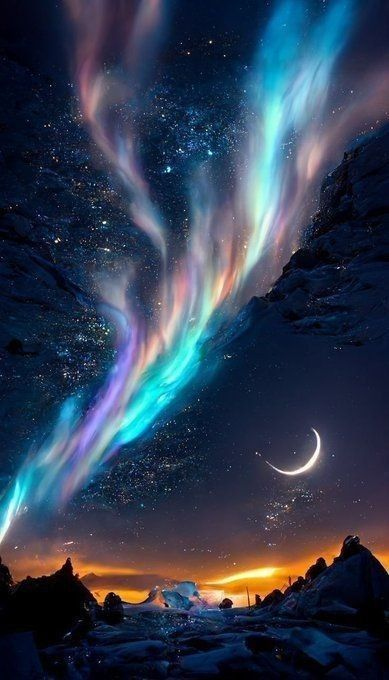

The Northern Lights
Solar explosions and flares reach a certain intensity, enormous amounts of particles They are thrown by this star into space. Thus creating the northern lights. We can see these phenomena in the regions near the North Pole and they are characterized by their beauty and unpredictability. This curious natural phenomenon that consists of a luminous glow in the night sky caused by the collision of charged particles from the Sun with the Earth's atmosphere.
